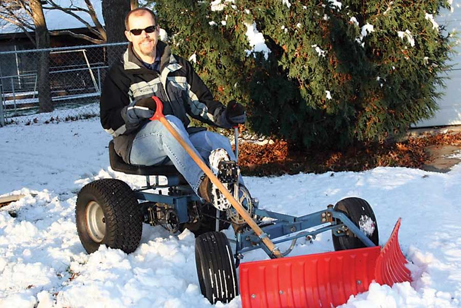
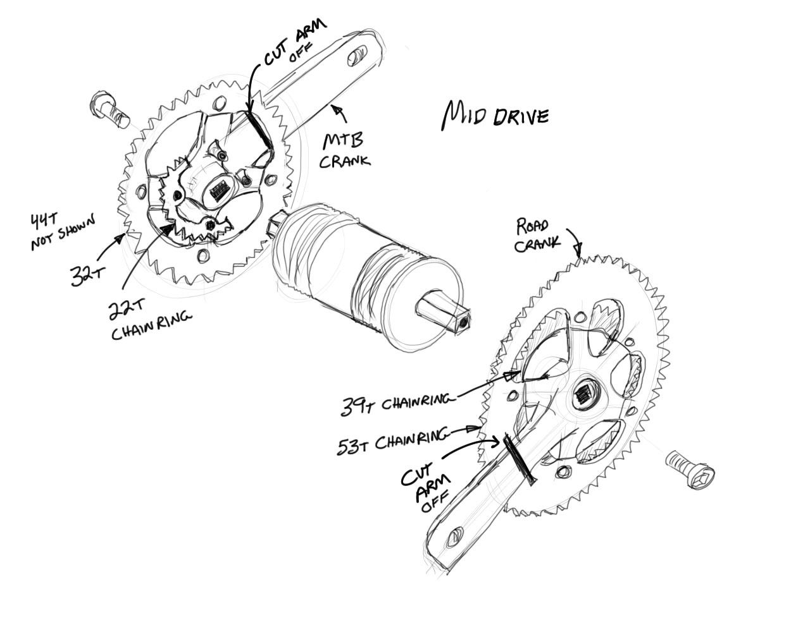
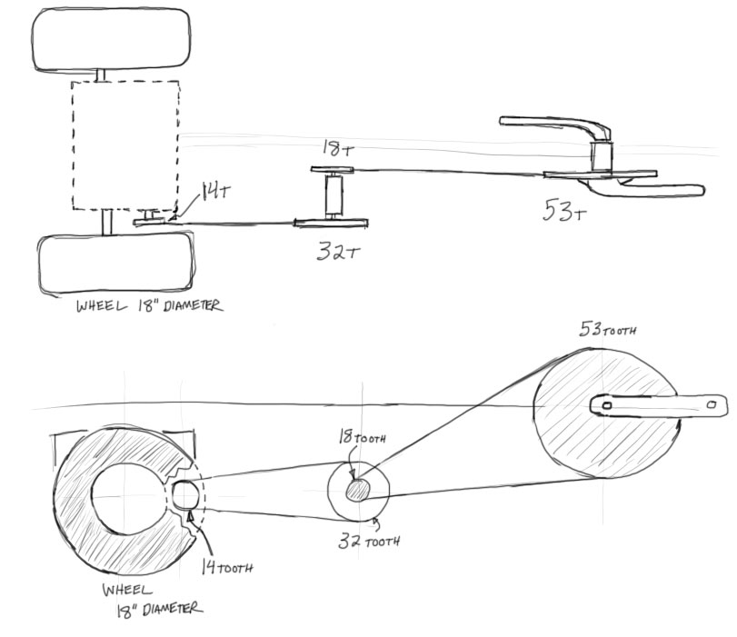
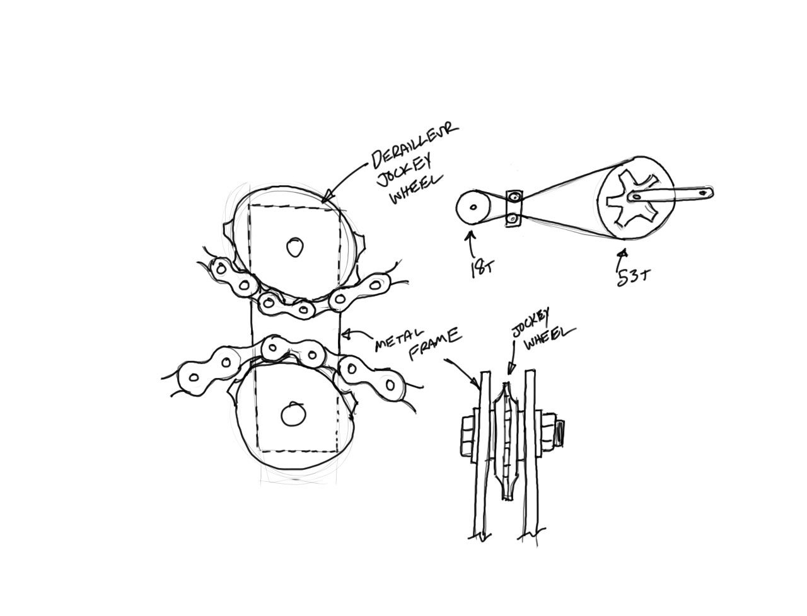
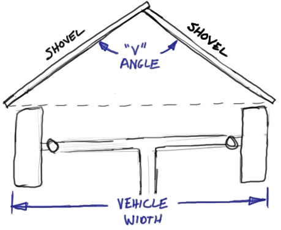
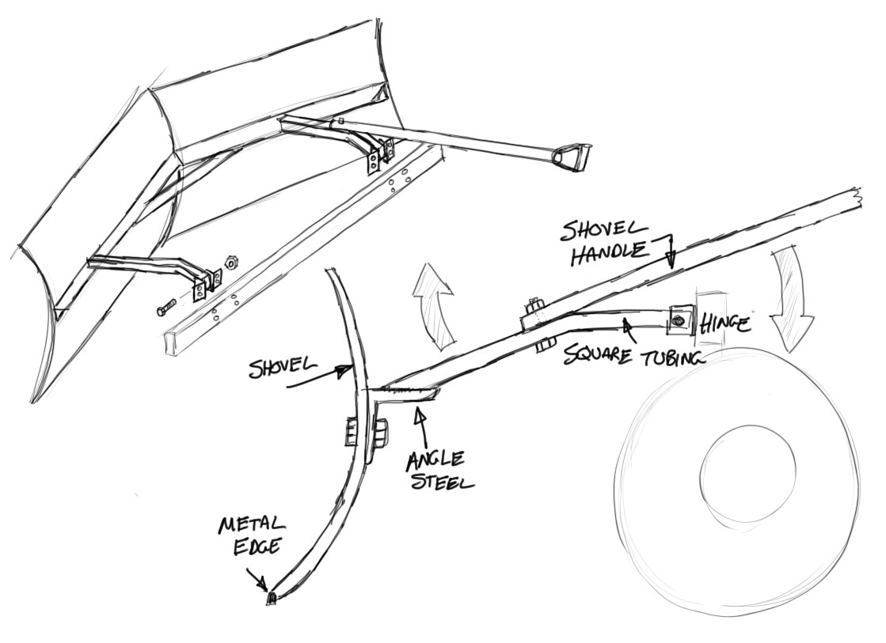
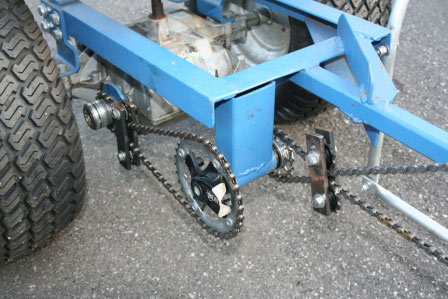
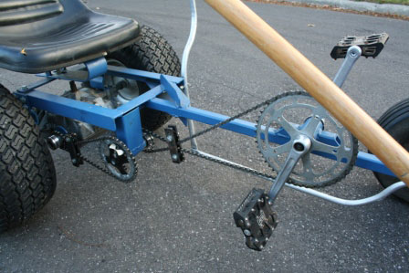
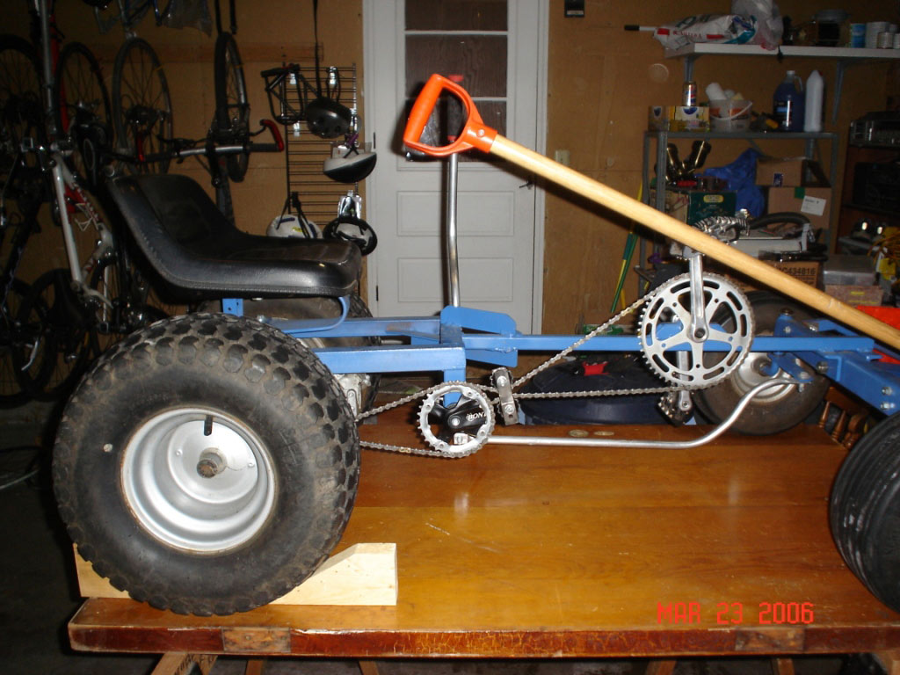

Diy Human-Powered Snowplow
Use a riding lawn mower chassis, some old bike parts and two shovels to create this human-powered machine.
By Kevin Blake
December 2009/January 2010
Have fun shoveling snow! Sound unimaginable? It’s not, if you build a pedal-powered snow plow. With this fun little machine, you can clear a driveway or sidewalk of snow in about the same amount of time it would take if you used a snow blower. And you’ll have more fun in the process. Soon, you’ll wish for a few inches of snow just so you can use the pedal power plow.
It probably took me 50 to 80 hours to complete the pedal plow. With a little bit of mechanical aptitude, some metal working resources and a couple of old bikes, just about anyone can make a pedal-powered snowplow. (You can see all of the design illustrations and photos in the Image Gallery.)
Human-powered Machines: The Light Bulb Comes On
Ever since I was old enough to mow the grass, I would daydream about ways to make the task easier. I thought about robot mowers, remote control mowers and tying self-propelled mowers to a stake to track in a circle. When my chores changed from grass to snow, my musings changed as well. I grew up in Missouri, so the amount of snow that I had to deal with was fairly small.
In 1996, I was interested in recumbent bicycles and human-powered vehicles. A friend and I built a recumbent tricycle for him to use as a commuter vehicle. It was winter when we took it for an initial test ride. At some point while we were riding the nearly completed tricycle, I commented that maybe we could put a plow on the front and push snow around. We discussed the idea and ended with the speculation the snow would be too heavy, and the tricycle would not get sufficient traction.
Then in 1999, I moved to Wisconsin and experienced more substantial snowfalls. The idea of a pedal plow started rolling around in my head again. I obtained a junked Craftsman riding lawn mower without the engine and cutting deck.
Inspired by Monster Garage, I realized that I had access to a shop and the beginnings of the snowplow in my garage. I turned off the TV and began sketching ideas for the plow.
Snowplow Frame and Chassis
To tackle this project, you’ll want to start with the frame. A used mower can provide you with a seat, wheels, steering mechanisms and a transmission. I recommend a recumbent seating position because it’s a little easier to get on and off the plow when you’re wearing winter clothes. It’s also more stable and places your weight over the rear wheels to improve traction. The seat from the mower is made for this position anyway.
The frame of the mower probably will not work without some modifications. The frame on my junked mower was essentially a large flat plate. I realized that I would have to mount the pedals high to make sure my heels cleared the existing frame. I had to scrap it and create a new frame. You might be able to modify your mower’s existing frame if you are handy with a cutting torch.
I decided to create my frame from scrap steel. If you ditch the existing frame, save as many of the parts from the mower as possible. Remove the transmission assembly, including the rear axle and wheels, in one piece. Also, keep the steering mechanism and front wheels together as it’s removed from the mower. Salvage the seat as well.
Creating the frame is a matter of connecting these mower pieces and adding the parts needed for the drivetrain. Use steel as the frame material because it is easy to weld and inexpensive. Also, the junked bikes you will find will most likely be steel. That means it will be easier to attach pieces of the bike frame to the plow frame.
You need two bottom bracket shells (the part where the crank and pedals are attached) from old bike frames. One of these is for the main crank and one for the mid-drive (see diagram in the Image Gallery). Design your new frame so it can use as much of the existing front end of the old mower as possible. This allows you to keep the mower steering mechanisms intact.
The transmission can be bolted directly to the frame in the rear of the machine. This enables you to use the transmission case as part of the frame structure. The seat is mounted over the transmission in a location similar to how it was on the original mower. This keeps the weight over the drive wheels and the overall length of the plow reasonably short.
A narrow beam connects the transmission to the front of the chassis. It must be narrow to allow space for the pedals. Attach one of the bottom bracket shells to the center beam. Make sure it is spaced so you can reach the pedals while sitting in the seat. This is where the front gear, or crank, will be installed.
Snowplow Drivetrain
For much of the drivetrain, you can use standard components from older junked or cheap bicycles. I recommend reading a book on bicycle repair and studying the drivetrain chapters closely. (One of my personal favorites is Richards’ Ultimate Bicycle Book.) The book will provide information on component parts.
For this project, it’s important to understand compatibility, installation, removal and maintenance of the parts. It’s OK if the book is old because the bikes you’re using for parts will be older as well.
In addition to the standard components, you may need some custom parts. These parts can be created by modifying standard bike components. The first challenge is hooking the bike chain to the mower transmission.
On first inspection, it might seem that using the existing drive pulley is a good idea. But the gearing in the mower’s transmission is designed to run with a motor producing hundreds of rotations per minute (RPMs). Unless you’re Lance Armstrong, this is much faster than you can pedal.
In addition, the drive pulley is typically oriented horizontally. This is not an insurmountable issue, but using this pulley would greatly complicate the drivetrain. If you have a transmission similar to the one I used, there will be a parking brake on the side. The shaft of this parking brake is tied directly to the transmission. This makes an ideal drive shaft. You can braze part of a rear bicycle wheel hub onto the existing metal disc part of the parking brake.
Use the piece of the hub called the “free hub body.” This is the part on the hub of a bicycle wheel that holds the rear cassette. (The rear gears on a bike are individually called cogs. Together they are known as a cassette. So a classic 10-speed bike would have a group of 5 cogs in the cassette on the rear wheel.) It’s not hard to find cogs from 11 teeth all the way up to 32 teeth. They all have the same interface, so it’s not hard to swap them out. Incorporating this rear hub piece into your drivetrain will give you a convenient way to adjust gearing.
To work out the gearing and design of the drivetrain, start at the transmission case. If the transmission is a closed box, you’ll need to figure out the gear ratio between the drive shaft and the rear wheel experimentally. The parking brake axle is a convenient drive shaft, but you need to find out what the relationship is with the rear wheel. Turn the shaft by hand and count how many times it goes around to turn the wheel once. On the transmission I have, it took 8 full turns of the shaft to rotate the wheel once. That’s an eight-to-one (8:1) gear ratio.
You need to plan how the gears and chains are going to be routed. You need to have a mid-drive in the drivetrain because of the size of the rear wheels and the transmission gearing. To be able to pedal the plow at a comfortable effort with only one gear in the front and one in the rear you would need a huge front gear. I would have needed a 14-tooth rear gear and a 95-tooth front gear. There are not any 95-tooth gears made for bicycles.
The mid-drive comes to the rescue by stepping the drivetrain down twice instead of once. (See diagram in the Image Gallery.) This keeps all the gears a manageable size. Another benefit of the mid-drive is that it redirects the chain. Your pedals are located in the center of the machine, but the drive shaft is on the side of the transmission case. Build the mid-drive with a bottom bracket shell, a bottom bracket axle and two mountain bike cranks.
Attach the mid-drive to the frame so that the left side lines up with the front gear and the right side lines up with the rear gear. You will only need the side of the cranks with the gears (chainrings). Cut the arms off the cranks to make the drive more compact. Be aware: Cutting the arms off the cranks will make it difficult to remove and install them. A cassette removal tool called a “chain whip” can be used to hold onto the cranks.
The next important dimension is the diameter of the rear wheels. This number is imprinted on the side of the tire. After you know the wheel diameter and the gear ratio of the transmission as explained above, you can determine what size gears you need. This calculation can get fairly complicated. However, if the transmission gear ratio is similar to 8:1 and the wheel size is 16 to 19 inches, the following gear scenario will work.
Use a road crank with a 53-tooth chainring on the front. The mid-drive should be made with two mountain bike cranks: a 22-tooth chainring on the left side and a 44-tooth chainring on the right. The rear cog should have 14 teeth. This will be a good start to get you rolling. If you need to change the gears in the future, you can change the 14-tooth cog easily if you used the freehub body.
The chainrings on the mid-drive can also be changed, but the choices are limited to common mountain bike sizes. You could also swap the entire crank for a road crank, which would give you more choices for the size of the chainring.
Chain Tensioners
There is one more important part of the drivetrain to build. You need a method to remove slack from the chain. Your plow needs to be direct drive so it can be pedaled forward or backward. My machine has two simple bicycle drivetrains, one on each side of the mid-drive. They both are made of two gears with a chain running between them. There are no derailleurs to shift the chain or take up the slack in the chain. This second point is important because, without a way to remove slack in the drivetrain, the chain can easily climb off the cogs.
Typically, the extra slack is taken up by the spring in a rear derailleur. However, if you use a rear derailleur as a chain tensioner in a situation such as this, you cannot pedal backward. Pedaling backward will put too much force on the derailleur spring. On a standard bicycle with a simple two-gear drivetrain, there is always a mechanism to move the gears apart to tighten the chain. Incorporating a mechanism such as this in the plow drivetrain will be difficult.
You can solve this problem by creating a chain tensioner with an over-under design. (See diagram in the Image Gallery.) A pulley on the top pushes the chain down, while a pulley on the bottom pushes the chain up. This two-pulley mechanism then floats between the two gears. You can use the small jockey wheels from old rear derailleurs for the pulleys. Jockey wheels are the tiny cogs that run the chain through the “s” shape under the rear cassette. Bolt the jockey wheels between two flat plates and space them so they squeeze the chain and remove most of the slack. This helps keep the chains wrapped more securely around the gears.
Snowplow Steering
You can avoid building a steering system by salvaging the complete steering mechanism from the mower chassis. You will also need to keep the wheelbase of your plow close to the original mower, or you’ll need to recalculate the compound angles that steering requires.
Because your legs will be occupying the center of the machine where the steering wheel is normally located, convert to a system that will allow you to move the steering off to one side. You can do this with a lever at the side of the seat. When you push the lever forward, the machine turns one way, and when you pull back it turns the other way. You’ll need to create a linkage from the front wheels to the lever. That linkage will need to be kept out of the way of your legs while pedaling. Use lightweight metal tubing for the linkage and lever. You will be able to easily bend and shape it so that you can route it from the front of the machine to the back.
Snowplow Blade
Another key component of the pedal plow is the blade. If you look at truck-mounted blades, you’ll notice they’re straight and push all the snow off to the side. This is not the best configuration for a human-powered snowplow. The vehicle is relatively lightweight, so as you try to push the snow forward, the weight of the snow can cause the vehicle to veer to the side.
To equalize the pressure of the snow, a V-shaped plow works well. (See diagram in the Image Gallery.) Start with two sturdy plastic snow shovels with metal edges on the bottoms. You’ll want to get the “pusher” style of shovel with a curved blade. Take the handles off the shovels and save them. You can use one as a lever to lift the blade on the finished machine.
Start by measuring the width of your vehicle. This dictates the overall width the blade will need to cover. Put the two shovels together in front of the machine and move the edges that are touching, the center, away from the vehicle to make a V shape. Create as much of a point as you can while keeping the backs of the shovels wider than your chassis. As the V shape gets more pointed, the angle between the shovels gets smaller. The smaller the angle, the easier it will be to push snow off to the side. However, as you make the angle smaller, the base of the “V” gets narrower.
After you’ve settled on an angle that will work, fit the blades together. Combining two curves into a V shape may appear daunting, but it’s really not difficult. Focus on cutting and shaping only one blade. It’s OK if the plow isn’t perfectly symmetrical. You can leave one blade slightly longer and cut the other to fit in behind it. After you’ve figured out the triangle, draw it on the floor or on a workbench in chalk. You can use this chalk sketch to lay out the shovels.
Devising a way to clamp one of the shovels in position will ease the next step. Blocks of wood fixed to the workbench can hold the base of the shovel. Hold the shovels together, draw a line with a marker on one and cut it with a saw. Do this repeatedly, cutting conservatively at first. As long as you don’t get too aggressive with each cut, you should be able to zero in on the fit.
Make sure to keep the shovels tilted at the correct angle with respect to the floor. They should be more vertical than you would typically use them as a shovel. This prevents the snow from piling up on the plow and weighing it down. It also helps the blade skip over cracks.
After you cut the shovels so they can be put together, you’ll need to mount them to the chassis. Make a steel framework that you can bolt the plastic shovels to, and mount that frame to the front of the plow chassis.
To lift the blade, you can make simple hinges mounted on the front of the chassis with angle iron, square steel tubing and bolts. Then use one of the shovel handles attached to the frame to lift and lower the blade. The shovel handle should be attached off to the side so that it doesn’t get in the way of your legs. (See diagram in the Image Gallery.)
History of My Blade Design
I went through quite a few ideas when designing the blade. My first version was a standard straight blade made by mounting the shovels side by side. I attached the blade to a pivot secured to the chassis so that I could change the angle of attack and push snow off to the left or right. I used a bike head tube and headset and the top of a fork to create the basic design. These are the parts that allow you to turn the front wheel of a bike with the handlebar.
Another aspect of the initial design was shock absorbing springs on the back of the blade. Hitting cracks in the concrete was something I was worried about. I noticed that full-sized truck snow blades had springs that hold the blade in position but allow it to tilt forward upon striking a crack or small obstacle in the pavement. I used springs from bike suspension forks to create a similar system for my plow blade.
My first blade design didn’t work well. The springs were too weak, and I didn’t have a good method of securing the blade after I pivoted it into position. When I hit the snow, the blade straightened to perpendicular to the vehicle and the weak springs allowed the blade to flop over. The principle of my spring design was good, but the springs were too weak.
So I decided to reduce the complexity of the blade construction for the sake of control. I removed the springs and mounted the blade solidly to the frame at an angle that would push the snow to the right only. But when I tried this blade configuration, the snow was wet and heavy. After I started pushing snow, the front end of the plow was too light, and the force of the snow made it swing sideways. I was unable to travel in a straight line.
Then it was time for plan C: the V-shaped plow. A V shape keeps the force of the snow evenly distributed on the plow. I can still push snow off to one side by using half of the V. It also allows me to plow a sidewalk more easily than a straight blade.
Operation of the Human-powered Snowplow
Using the pedal plow to clear a sidewalk is straightforward. You line it up and head down the middle. The V-shaped blade pushes the snow to the sides. Clearing a larger area requires a different technique. For a driveway, head down the middle pushing snow left and right. For the next pass, line up one side of the “V” and push snow in just that one direction. Because you can only use half the width of the blade, the amount of snow doesn’t overload the machine and cause it to veer to the side. The snow will end up at the end and edges of the drive, where it will need to be shoveled by hand over the previous piles.
John Gulland said it best: “The critical factor in making pedal power a viable option is matching the expectations with realistic output.” (See Make Electricity While You Exercise.) This is especially true for my pedal plow. This is not a machine you can hop on and zip down the street, moving huge amounts of snow. A small residential snowblower is many times more powerful.
But I was able to prove that idea wrong on at least one occasion last winter. As I headed out to tackle 5 inches of fresh snow, I noticed my neighbor firing up his snowblower. I didn’t think much of it, but as I was finishing up, I realized he was still working to clear his driveway. I had pushed all the snow in my drive to the end with the plow and then shoveled it over the substantial mounds already there from the previous snowfalls. I was happy because our driveways are about the same size. I was able to beat a gas-powered snowblower with human power. It was a small victory, but a victory nonetheless.
I realize that if circumstances had been different, I would have struggled quite a bit, and the gas snowblower might have been faster. But this impromptu comparison showed me that, in certain snow conditions, my pedal plow is faster than a typical snowblower.
In his book Bicycling Science, David Gordon Wilson argues that pedal-powered mowers and plows are inefficient because the machine has to do the work of carrying the operator in addition to doing the primary job. He suggests that a push plow on wheels is the best application for human-powered snow removal. I tend to agree with him, but a blade with wheels still requires the operator to bend and push with the upper body. Over time, this could stress the back - especially if one doesn’t maintain good posture. My experience is that using the pedaling mechanism focuses the effort into the larger leg and buttock muscles.
My pedal plow doesn’t lift the snow at all. When there are piles of snow from previous falls, the snow still has to be shoveled up and over. Even with this limitation, I like using my plow because it reduces the cumulative load on my back. I can push all the snow in my driveway to the end in one pile with the plow. This allows me to scoop all the snow from one place instead of having to carry or push it by hand all over the driveway. All of the effort to move the snow still comes from my muscles, but it’s my leg muscles instead of my back muscles. Plus, as a cyclist, I like being able to get a little spinning done, even if there’s snow on the ground.
Future Ideas and Refinements
With refinement, a more general tractor could be built using this basic idea. It could be used in much the same way a gas-powered tractor with seasonal attachments. In the summer, a reel-type lawn mower could be attached. Other options might include a lawn sweeper or a pavement sweeper. In the winter, weights could be added and the reel mower replaced with a snowplow.
The plow on my machine is a fixed V-shape for plowing sidewalks. Over the past few years, I have encountered snow conditions that could be tackled with a flat blade, such as accumulations of less than 3 inches of powdery snow. The next upgrade for my current machine will be to make another straight blade that can be swapped with the V-shaped plow. Overall performance could be improved even more if the blade could be adjustable from a V shape (for sidewalks and deep snow) to a flat blade (for less snow on a driveway). Designing a blade that can be adjusted without removing it from the machine would make the pedal plow more efficient. Plows of this type exist for full-sized trucks. Scaling the design down to human-powered size still needs to be done.
Another possible upgrade on the plow would be a salt spreader on the rear. With this attachment, it would become the ultimate sidewalk-clearing machine.
Adding electric assist to propel the plow or spin the reel of a mower would vastly increase the amount of work one could handle with this machine. A reel mower cuts best when it’s spinning fast. The electricity could be generated from renewable sources. If paired with a system such as John Gulland’s electricity-generating bicycle, you could accomplish a lot of outdoor chores with human power alone.
Kevin Blake
Sun Prairie, Wis.
You may also be interested in reading What to Look for in a Used Bike and Convert Your Lawn Tractor to Electric Power.
Do you have an idea for a great pedal-powered machine? Tell us about it in the comments section below.
|
 ELLIE BLAKE This human-powered snowplow will turn winter chores into fun. |
 KEVIN BLAKE Mid-drive design showing road and mountain bike cranks |
 KEVIN BLAKE Drivetrain layout and gear sizes on the plow |
|
 KEVIN BLAKE Chain tensioner design |
 KEVIN BLAKE Plow angle sketch |
 KEVIN BLAKE Plow attachment and lift mechanism |
|
 KEVIN BLAKE This is a good view of the mid-drive, chain tensioners and the location of the former parking brake axle that is now used as the main drive axle. |
 KEVIN BLAKE Complete view of the drivetrain. You can see where the standard bicycle cranks are used and where the bottom bracket shells are welded to the frame. |
 KEVIN BLAKE Here you can see how the steering linkage attaches to the front wheels. It is not obvious because of the angle of this photo, but the silver linkage is only a few inches off of the ground. |
 KEVIN BLAKE Waiting for the snow. This picture shows how the shovel handle attaches to the blade frame. You also get a good view of the steering lever. |
|
|